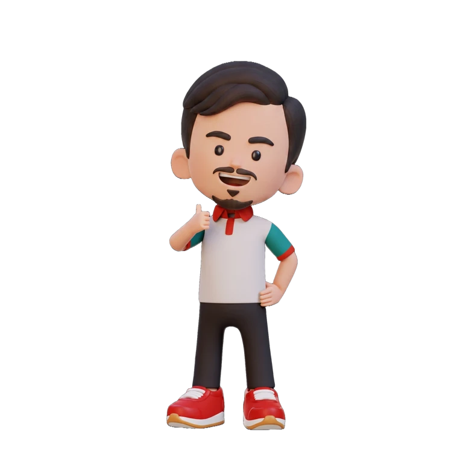
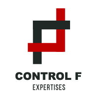
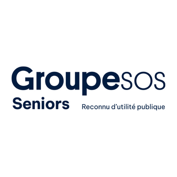
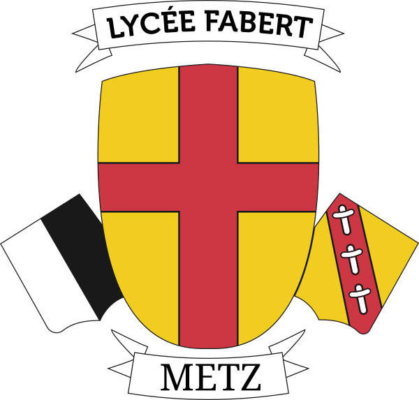
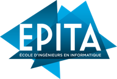

Mehdi RobardetÉtudiant à l’EPITAUn esprit curieux.Des idées en mouvement.
J’explore l’intelligence artificielle et je développe des
logiciels.
Avec de la rigueur, de la curiosité et le goût du détail.
01 / LA CURIOSITÉ EN PRATIQUE
Pensé. Codé. Concrétisé.
De l’IA à l’application. Une sélection de projets pour apprendre, explorer et construire.
Aucun projet trouvé. Essayez un autre mot-clé.
02 / UN PEU PLUS SUR MOI
Apprendre sans cesse.
Construire avec sens.
Étudiant en dernière année à l’EPITA, je m’intéresse à ce qui relie l’intelligence artificielle, la donnée et le développement logiciel.
Du modèle de machine learning à l’interface, j’aime comprendre les systèmes dans leur ensemble et donner vie à des idées utiles.
Échangeons ensembleIntelligence artificielle
Python · PyTorch · TensorFlow
NumPy · Pandas · SciPy · PySR
Software engineering
React · JavaScript · Django · Node.js · Quarkus
Java · C++ ·
C · C# · Rust · OCaml · SQL
Data & infrastructure
Docker · Kubernetes · GitLab CI · Kafka
Redis · PostgreSQL ·
MongoDB · Neo4j
Févr. 2026 - aujourd'hui
Full-Stack DeveloperCONTROL F · CDD
- Réalisation de systèmes CRUD pour la gestion des données applicatives.
- Maintenance de la codebase avec revues de code et gestion des merge requests.
- Interventions sur l'environnement Kubernetes : connexion aux pods, exécution de migrations, redémarrage de services.
- Développement d'API avec Django et création de graphiques de visualisation de données avec Recharts.
- Technologies utilisées : React.js, Django, Kubernetes, AWS, Git, JavaScript.
Paris, France · Hybride
Sept. 2025 - Janv. 2026 Front-End DeveloperCONTROL F · Stage
- Développement de dashboards interactifs avec Shadcn/UI et React.js.
- Migration et maintenance de la pipeline web ainsi que de la codebase front-end.
- Conception et intégration d'une landing page à partir de maquettes Figma.
- Outils utilisés : JavaScript, React.js, Figma, Jira, Git.
Paris et périphérie · Hybride
Juin 2023 - Juillet 2023
QSE InternGroupe SOS Seniors · Stage
- Analyser les consommations énergétiques des établissements médico-sociaux.
- Créer des supports interactifs de sensibilisation à la sécurité et au développement durable.
Metz, Grand Est, France · Sur site
Janvier 2022 - Juin 2022
Aide éducative bénévoleBénévolat · Assistance aux élèves de première en
mathématiques
- Aider aux élèves de première à la préparation des examens.
- Renforcer leur méthodologie de résolution de problèmes.
Metz, France · Sur site
Sept 2022 - aujourd'hui
EPITA - École d'ingénieur en informatiqueGPA 3.7, étudiant en dernière année
- Intelligence artificielle : Fondamentaux pour le Machine Learning, Introduction aux réseaux de neurones, Natural Language Processing, Systèmes Multi-Agents et IA symbolique.
- Data & cloud : Introduction au Data Engineering, Python pour le Big Data avec Pandas, Microsoft Azure et Video Processing.
- Modélisation avancée : Recommender System / Matrix Factorization, Optimisation Convexe, Programmation Par Contraintes, Bayésien & Causalité.
Paris, France
TOEIC 870 - anglais professionnel
2026National Chung Cheng UniversitySemestre d'échange
- Contenu : Artificial Intelligence, Robotics, Data Science.
Minxiong, Taiwan
Sept 2019 - Juin 2022Lycée Fabert
- Obtention du baccalauréat spécialités Mathématiques, Physique-chimie et Informatique, mention Très Bien.
- Langues : Français courant, Anglais niveau avancé, Italien niveau de base.
Metz, France
03 / LOIN DU CLAVIER
Un autre regard.
Des villes, des paysages, des instants. Mon carnet de voyage, photographié à l’iPhone.
04 / ET SI ON ÉCHANGEAIT ?
Les belles idées
commencent par un bonjour.
Un projet, un stage, une opportunité ou simplement envie de discuter ? Ma boîte mail est ouverte.